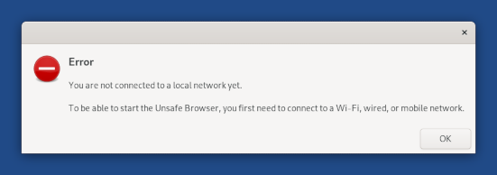

This release fixes known security vulnerabilities. You should upgrade as soon as possible.
Reliability improvements to automatic upgrades
Repair automatically the file system used during upgrades.
Automatic upgrades were sometimes failing even after doing a manual upgrade because of an unclean file system. (#17902)
Resume automatically when the download of an upgrade fails.
Other changes and updates
Update Tor Browser to 10.0.14.
Update Thunderbird to 78.8.0.
Update Tor to 0.4.5.7.
Update GRUB to 2.04-16.
Update some firmware packages. This should improve the support for some Wi-Fi interfaces, especially Intel, Broadcom, and Cypress interfaces.
Problemas arreglados
Improve the error message when starting the Unsafe Browser while offline. (#12251)

Para más detalles, lee nuestro changelog.
Problemas conocidos
Automatic upgrades are broken from Tails 4.14 and earlier.
To upgrade from Tails 4.14 or earlier, you can either:
Do a manual upgrade.
Fix the automatic upgrade from a terminal. To do so:
Start Tails and set up an administration password.
In a terminal, execute the following command:
torsocks curl --silent https://tails.boum.org/isrg-root-x1-cross-signed.pem \ | sudo tee --append /usr/local/etc/ssl/certs/tails.boum.org-CA.pem \ && systemctl --user restart tails-upgrade-frontendThis command is a single command that wraps across several lines. Copy and paste the entire block at once and make sure that it executes as a single command.
Approximately 30 seconds later, you should be prompted to upgrade to the latest version of Tails. If no prompt appears, you might already be running the latest version of Tails.
Mira la lista de problemas duraderos.
Get Tails 4.17
Para actualizar Tails y mantener tu almacenamiento persistente
Automatic upgrades are broken from Tails 4.14 and earlier. See the known issue above.
Automatic upgrades are available from Tails 4.14 or later to 4.17.
Si no puedes hacer una actualización automática, o si Tails falla al iniciar después de una actualización automática, intenta hacer una actualización manual.
Para instalar Tails en una nueva memoria USB
Sigue nuestras instrucciones de instalación:
El Almacenamiento Persistente en la memoria USB se perderá si instalas en vez de actualizar.
Para sólo descargar
If you don't need installation or upgrade instructions, you can download Tails 4.17 directly:
What's coming up?
Tails 4.18 is scheduled for April 20.
Echa un vistazo a nuestro roadmap para ver hacia dónde nos dirigimos.
We need your help and there are many ways to contribute to Tails (donating is only one of them). Come talk to us!